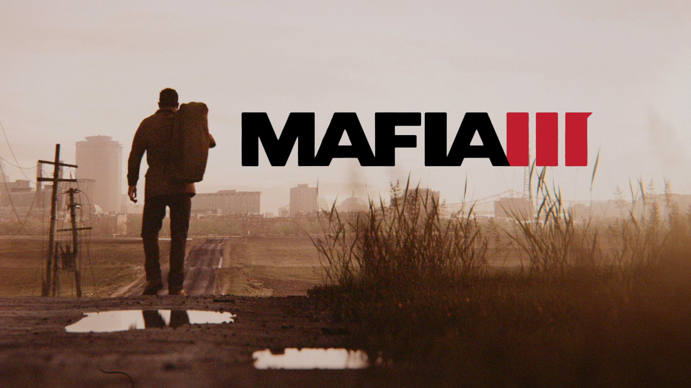

10. The Division
The Division está inspirado por la Operation Dark Winter y la Directive 51, eventos reales que
"revelaron lo vulnerables que nos hemos convertido"; la sociedad se ha vuelto "frágil" y "compleja".
En el juego, una enfermedad que se extiende durante el «viernes negro» causa el colapso de Estados Unidos
en cinco días. El jugador forma parte de un grupo llamado "Strategic Homeland Division (SHD)", conocido como
"The Division". Este grupo fue establecido para combatir la amenaza y hacer lo que sea para "salvar lo que
queda" en una situación de multijugador masivo en línea, poniéndolos en contra de amigos, IA, y otros jugadores.

9. Far Cry Primal
El juego se remonta al 10.000 a.C durante el Mesolítico. Toma lugar en el ficticio Valle de Oros
en Europa Central, un mundo abierto habitado por todo tipo de criaturas como Mamuts y Tigres Dientes de sable.
Sobrevivir, cómo no, es un reto, pues no solo hay que enfrentarse a los animales sino también a otras tribus
como los "Udam" o "Izila". El jugador toma control de Takkar, un hombre de las cavernas "Wenja" que habita en
el Valle de Oros y que carece de armas para cazar. Este, mediante la recolección de madera, rocas y piel
de animales podrá mejorar sus objetos y fabricar nuevos, llegando a poder construir un poblado entero con
cientos de habitantes.
8. Ratchet & Clank
Aunque se trata de un remake del primer juego (aparecido en 2002 para PlayStation 2), tiene una variedad
de elementos de juego de diferentes entradas en la serie, con características como ametrallamiento y la
inclusión de armas que aparecieron después del primer juego. También cuenta con nuevas armas de la marca.
Por ejemplo, el Pixelizer, que, como su nombre indica, da a los enemigos una apariencia de 8 bits.
7. Mafia III
El juego tiene lugar en 1968, y gira en torno a Lincoln Clay, huérfano y veterano de Vietnam. Como huérfano,
constantemente busca una familia, hasta que se une a las fuerzas armadas y combate en la guerra de Vietnam.
Regresa a New Bordeaux después de la guerra para unirse a la mafia negra. Después de sobrevivir a un intento
de asesinato por parte de la mafia italiana, Clay intenta fundar su propia organización criminal y obtener
venganza.4 Para ello contará con la ayuda de tres aliados: Cassandra, Burke y Vito Scaletta.

6. Doom
El juego está ambientado en el planeta Marte, en una instalación de la UAC siendo invadida por
las fuerzas del infierno. Los demonios se han construido a través de experimentos corruptos de la UAC.
5. Final Fantasy XV
En la noche de la firma de un tratado de paz entre los reinos de Lucis y Niflheim, en la que la familia
real de Tenebrae también asiste, el emperador de Niflheim, Idola Aldercapt, utiliza el tratado como
una excusa para derribar la barrera mágica de Insomnia(Capital de Lucis) por lo que su ejército es capaz
de tomar el control del cristal de la ciudad. La Fuerzas Niflheim arrasan la ciudad de la corona,
al parecer matando al rey Regis Caelum. El Hijo del rey Regis, Noctis Lucis Caelum, es declarado muerto,
junto con la princesa de Tenebrae llamada Lunafreya Nox Fleuret. Tras el ataque de Niflheim, Lunafreya,
quien sobrevive al ataque, vaga por las calles de Insomnia y, finalmente hace su camino hacia Altissa.
El informe de que Noctis ha muerto es todo una farsa. Cuando el príncipe se da cuenta que Idola Aldercapt
y el resto de Niflheim lo quieren muerto, Noctis y su vasallos, su consejero real, Ignis; su guardaespaldas,
Gladiolus; y su amigo de la infancia, Prompto, huyen del país y comienzan un viaje hacia Altissa
para encontrarse con Lunafreya.

4. Overwatch
Overwatch es un videojuego de tipo shooter en primera persona desarrollado por Blizzard Entertainment.
El juego fue anunciado el 7 de noviembre de 2014 durante la BlizzCon 2014, y su versión beta cerrada fue
estrenada el 27 de octubre de 2015. Sólo fue posible adquirir dicha beta inscribiéndose en la página web
oficial de Blizzard. También anunció que habría fines de semana de pruebas beta donde cualquier persona
podría jugar para probar la resistencia de los servidores. La fecha de lanzamiento de la beta abierta fue
anunciada y duró desde el 5 de mayo hasta el 9 de mayo para todos los jugadores. El juego completo se
estrenó el pasado 24 de mayo de 2016 la mayoría de las ventas fueron llevadas a cabo de manera Online
y fue dada a conocer por el canal de youtube "dark player", uno de los diseñadores voluntarios.

3. Gears of War 4
Gears of War 4 tendrá lugar 25 años después de los acontecimientos ocurridos en Gears of War 3, y según
Rod Fergusson, Director de The Coalition, el propósito del estudio es devolver la saga a sus orígenes,
con una ambientación y una historia más oscura y misteriosa, tal y como tuvo el primer Gears of War.
El nuevo enemigo será "El Enjambre" quien se desconoce de donde viene.
2. Uncharted 4
En medio de una tormenta, Nathan Drake conduce una lancha en el mar junto a su hermano, Samuel Drake,
mientras son perseguidos por un grupo de mercenarios. Pero sus intentos por escapar son en vano y su lancha
es derribada por un barco. Tras esto, la historia retrocede a la preadolescencia de Nathan cuando vivía en
un orfanato católico. Esa misma noche, Nathan es castigado por un altercado con otro niño. Luego del regaño
de la hermana Catherine, él se queda solo en la habitación, hasta que aparece su hermano Sam en la azotea
de uno de los edificios del orfanato y le hace señales con una linterna. Por lo tanto, Nathan sale por la
ventana, escapa del orfanato y se reúne con Sam. Pero él debe salir de la ciudad por un trabajo temporal
donde puede ganar dinero, diciéndole a Nathan que ya sabe donde están las pertenencias de su madre y que
hará todo lo posible por regresar.
1. Dark Souls III
Es la era donde Gwyn sale como el máximo vencedor en la batalla contra los dragones, de ahi establecen
en Lordran, fundando la ciudad de Anor Londo. Lordran estaría bajo el mandato de las deidades del propio
Gwyn y sus hijos, pronto varios miles de años después del acontecimiento, la Llama que les concedieron el
poder empezaron a apagarse, indicio de la Era final para los dioses. Gwyn se retrató a ello y en un intento
de salvarse de una Era Oscura: Era de los hombres, se llevan la mitad de sus ejércitos para ir al Horno de
la Llama Original, este intenta enlazar el fuego, pero no lo consigue avivarlo lo suficiente, por tanto usan
a sus caballeros como combustible para mantener la hoguera viva, Gwyn no puede abandonar la hoguera o de lo
contrario se apaga. Dicha Edad del Fuego se mantiene por Gwyn. Tal acto maldice a todos los habitantes
vivientes del mundo de Dark Souls, se le conoce como el "Signo Oscuro". Dicho "Signo Oscuro" amenazaba con
convertir a todos en "Huecos". Dicho información sólo lo conocen las deidades de Anor Londo. Aquellos que
portan el signo son llevados al Refugio donde les espera el Fin del Mundo, pero el problema se agrava más
cuando los propios habitantes se sucumben uno a uno, dejando el asilo con un propósito inútil.